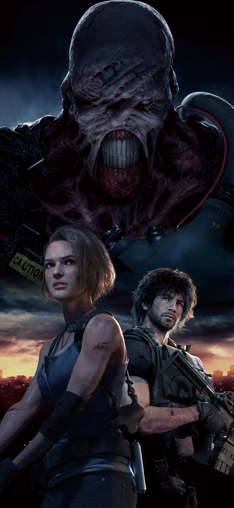

HISTÓRIA
“28 de setembro, manhã. Os monstros tomaram conta da cidade. De alguma forma… ainda estou viva”.
|
Resident Evil 3: Nemesis, conhecido no Japão como Biohazard 3: Last Escape (バイオハザード3 ラストエスケープ,Baiohazādo 3 Rasuto Esukēpu?), é um jogo eletrônico de survival horror desenvolvido e publicado pela Capcom, lançado originalmente para o PlayStation em 1999. É o terceiro jogo da franquia Resident Evil, e ocorre antes e após os acontecimentos de Resident Evil 2. |
|
A história centra-se em Jill Valentine e em seus esforços para escapar de Raccoon City, uma cidade completamente infectada com um novo tipo de arma biológica secreta desenvolvida pela empresa farmacêutica Umbrella Corporation. O jogo usa o mesmo motor que seus antecessores e apresenta modelos 3D sobre fundos pré-renderizados com ângulos de câmera fixa. Ao contrário dos jogos anteriores, Resident Evil 3: Nemesis foi projetado para ser mais orientado para a ação. Ele apresenta um maior número de inimigos para serem derrotados e introduz a criatura Nemesis, que persegue periodicamente o jogador até o final do jogo. Resident Evil 3 um sucesso crítico e comercial, vendendo mais de três milhões de unidades em todo o mundo. A maioria dos críticos elogiaram os gráficos por serem detalhados e a criatura Nemesis como um vilão assustador, mas alguns criticaram a curta duração do jogo e da história. Após o seu lançamento no PlayStation, o jogo foi posteriormente portadopara Dreamcast, Microsoft Windows e GameCube. |
 |
_____________________________________________________________________________________________________________________
JOGABILIDADE
|
Resident Evil 3: Nemesis é um jogo eletrônico de survival horror onde o jogador controla o personagem na perspectiva de terceira pessoa para interagir com o ambiente e inimigos. Jill Valentine é a única protagonista e personagem principal controlável do jogo, com outro personagem também sendo controlável por um breve período.[1] Para progredir, o jogador deve explorar a cidade fictícia de Raccoon City, evitando, enganando e derrotando vários tipos de inimigos. O jogador pode abrir portas, empurrar ou escalar certos objetos e pegar itens. Todos os itens coletados são armazenados em um inventário que o jogador pode acessar a qualquer momento. Eles podem ser utilizados, examinados e combinados para fazer novos. O inventário é limitado a um determinado número de espaços, e o jogador deve muitas vezes mover itens para uma caixa de armazenamento localizadas em salas especiais para gerenciar o espaço. Em combate, o jogador tem a capacidade de evitar ataques, usar armas de fogo contra os oponentes e atirar em alguns objetos como barris, fazendo-os explodir para danificar inimigos próximos. Também é possível executar um giro rápido de 180 graus para fugir dos inimigos. O jogador tem uma certa quantidade de saúde, que diminui se o personagem é atacado pelas criaturas. Quanto menor a saúde, mais lentamente ele irá se locomover. No entanto, os jogadores podem aumentar a vida através da recolha e uso de ervas, que podem ser misturadas com outras ervas para aumentar o seu efeito curativo. O jogo também incorpora um sistema de criação de munição, que pode ser fabricada a partir de diferentes tipos de pólvora. Além de entrar em combate, o jogador deve muitas vezes resolver inúmeros quebra-cabeças que incidem sobre desafios lógicos e conceituais. |
|
Ao contrário dos jogos anteriores da série Resident Evil, o jogador é ocasionalmente solicitado a escolher entre uma de duas ações possíveis. Essas escolhas afetam a direção do jogo e da história. Além disso, uma criatura chamada Nemesis é encontrada várias vezes ao longo da campanha como um chefe recorrente. Nemesis é consideravelmente mais poderoso do que o jogador e tem a capacidade de usar um lançador de foguetes como arma, esquivar-se de projéteis e de perseguir o personagem de uma área para outra. Durante um desses encontros, o jogador pode optar por lutar com Nemesis ou fugir até que ele vá embora. São possíveis vários encontros, com alguns sendo obrigatórios e outros variando em natureza e localização com base em determinadas escolhas feitas durante a campanha. Mesmo derrotando ou escapando dele durante uma dessas batalhas, Nemesis irá inevitavelmente continuar a perseguir o jogador até o final do jogo. Ao completar o jogo principal, um novo minijogo intitulado The Mercenaries: Operation Mad Jackal é desbloqueado. Neste modo, o jogador deve escolher jogar como um dos três personagens que aparecem na campanha principal e correr de um lado da cidade para o outro dentro de um período de tempo limitado. Todavia, o tempo fornecido no início é insuficiente para completar a missão diretamente, e o jogador deve continuamente receber bônus de tempo através da realização de certas ações como derrotar os inimigos e explorar áreas escondidas. Completar o jogo principal também destrava roupas alternativas para Jill e arquivos de epílogos que detalham as atividades de diferentes personagens na sequência dos acontecimentos do jogo. The Mercenaries: Operation Mad Jackal e as roupas alternativas já estão disponíveis desde o começo na versão para Microsoft Windows e Dreamcast. |
_____________________________________________________________________________________________________________________
ENREDO
|  |
Resident Evil 3: Nemesis começa 24 horas antes dos eventos de Resident Evil 2 e segue a ex-agente do Serviço deResgate eTáticas Especiais (S.T.A.R.S.) Jill Valentine em sua tentativa de escapar de Raccoon City. Quase todos os cidadãos da cidade foram transformados em zumbis por um surto do T-virus, um novo tipo de arma biológica secreta desenvolvida pela empresa farmacêutica Umbrella Corporation. No seu caminho para o Departamento de Polícia de Raccoon City, Jill encontra outro membro da equipe, Brad Vickers, que é posteriormente morto por Nemesis, uma arma bio-orgânica criada pela Umbrella com o único propósito de eliminar os membros sobreviventes dos S.T.A.R.S., que são testemunhas dos experimentos antiéticos da empresa. Depois de fugir de Nemesis, Jill encontra três membros sobreviventes do Serviço de Contramedida de Risco Biológico da Umbrella (UBCS): Carlos Oliveira, Mikhail Victor e Nikolai Zinoviev. Este último explica a Jill e Carlos que um helicóptero de resgate pode ser contactado se eles conseguirem chegar a Torre do Relógio de Raccoon City e tocar o seu sino. Conforme o jogo avança, Nikolai é dado como morto após um encontro com zumbis em um escritório de marketing da Umbrella, enquanto Mikhail se sacrifica para salvar Jill e Carlos de Nemesis detonando uma granada no compartimento traseiro de um carro de cabos em seu caminho para a Torre do Relógio, fazendo o veículo ficar fora de controle, que acaba colidindo com o pátio principal da torre. Como resultado, Jill e Carlos são brevemente separados. No local, Jill chama o helicóptero através do toque do sino, antes de ser confrontada por Nemesis, que destrói o transporte e a infecta com o T-virus. Ela consegue derrotar o monstro temporariamente, caindo inconsciente após a batalha devido ao vírus. Carlos encontra Jill e a leva para para dentro da Torre do Relógio. Três dias depois, ele encontra uma cura para a infecção de Jill no Hospital Geral de Raccoon City. Retornando para a torre com a vacina, ele é confrontado por Nemesis por um breve período. |
|
Depois de se recuperar da infecção, Jill prossegue em direção ao Parque de Raccoon e entra na cabine do zelador. Lá, ela descobre a partir de Nikolai que ele é um dos "supervisores" enviados para Raccoon City, juntamente com a UBCS, para reunir dados de combate a partir de encontros do soldado com armas biológicas da Umbrella. Ele então é forçado a sair depois de um tremor que sacode a cabine. Jill segue Nikolai, descobrindo que o abalo foi causado por uma enorme criatura parecida com um verme. Ela derrota o inimigo e escapa para uma fábrica na parte de trás do parque. Dentro do local, Jill se encontra com Carlos, que lhe diz que o governo dos Estados Unidos está planejando lançar um míssil nuclear na cidade para erradicar a infestação do T-virus. Depois de enfrentar Nemesis e pegar um cartão de acesso necessário para escapar, Jill descobre na torre de controle da fábrica que o ataque de mísseis em Raccoon City já começou, restando pouco tempo antes da cidade ser destruída. Na torre de controle da fábrica, Jill encontra Nikolai, que começa a atirar nela a partir de um helicóptero. Jill pode então escolher entre conversar com Nikolai ou destruir o helicóptero. Se Jill negocia com Nicholai, ele revela que matou os outros supervisores e que possuí uma recompensa da Umbrella por acabar com Jill antes de escapar. Independentemente do destino de Nicholai, ela faz seu caminho para o pátio traseiro e confronta Nemesis pela última vez. Depois de uma intensa batalha, Jill o derrota com a ajuda de um protótipo de canhão elétrico antes de encontrar-se com Carlos e escapar da cidade através de um helicóptero pilotado pelo especialista em armas dos S.T.A.R.S., Barry Burton. A cena final do jogo mostra o míssil nuclear vaporizando Raccoon City e sua população infectada. |
 ® Direitos Reservados
® Direitos Reservados